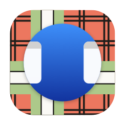
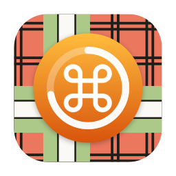
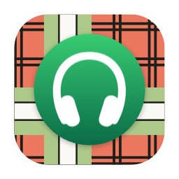
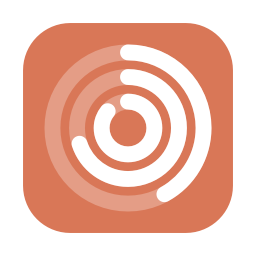
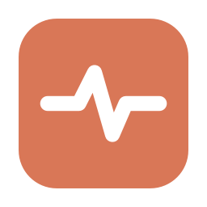
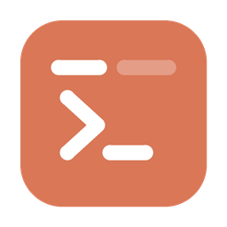

Desktop Please
Show Desktop that works from full-screen apps. Press your usual shortcut anywhere and your desktop appears.
Free, open source Mac apps, and tools for people who use Claude every day.
Free, open source and notarized by Apple.

Show Desktop that works from full-screen apps. Press your usual shortcut anywhere and your desktop appears.

⌘Q only quits when you hold it. A quick tap does nothing, so no more quitting by accident.

Your Bluetooth headset's battery in the menu bar, even for headsets macOS shows no level for.
Browser extensions and tools for people who use Claude every day.

Your Claude usage at a glance: session, Fable and weekly limits in your browser's toolbar, with the time each one resets.

Claude's status, one click away: a checkmark when all is well, an X when it isn't.
Keeps your claude.ai tab named after the chat you're actually in. No network calls.

Every Terminal tab shows just its Claude Code thread name. One command, applied live, no restart.
A Claude Code status line: everything worth watching in two rows, in a rainbow box.